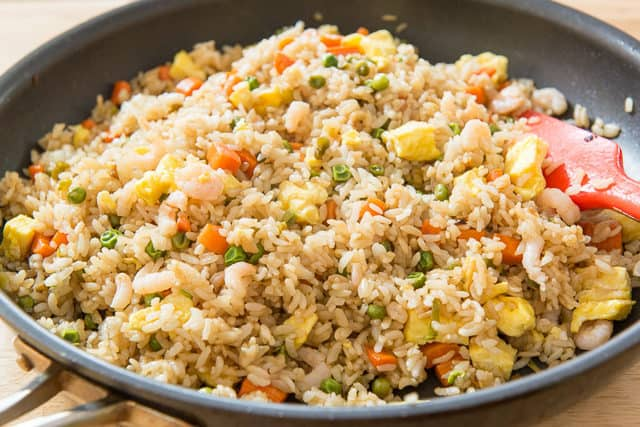

by Jimmy Hwang
Fry the rice by lightly browning in a pan or wok. Stir-fry the onions, garlic, and carrots until tender. Make a large well in the center of the pan with the rice. Pour in the whisked eggs and scramble until small curds form. Soy sauce is optional but adds a savory flavor to the rice. Add green peas at the end to retain color and shape.